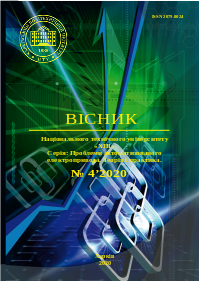

Научная периодика Украины • GitHub • GitLab • Google Drive • | • index • txt • md • ukr • eng
|  | Вестник Национального технического университета "Харьковский политехнический институт" Серия: Проблемы автоматизированого электропривода. Теория и практика. № 4 (1358) Март 2020 года Издание посвящено освещению вопросов теории электромеханических систем, достижений в области систем управления автоматизированного электропривода и его компонентов, энергосбережению средствами электропривода. Публикуются статьи, посвященные вопросам подготовки специалистов по автоматизации электромеханических систем и электропривода, мехатроники и робототехники. Для научных работников, преподавателей высшей школы, аспирантов, студентов и специалистов в области систем автоматизированного электропривода и его составляющих элементов.
|
PDFDjVUВ. Б. Клепиков
К 90-летию кафедры "Автоматизированные электромеханические системы"
Национального технического университета "Харьковский политехнический институт"
PDFDjVUВ. В. Грабко, О. В. Дидушок
Математическая модель выявления износа контактной системы при коммутации вакуумного выключателя
PDFDjVUА. П. Черный, В. Ю. Ноженко, В. К. Тытюк, О. К. Данилейко
Исследование пуска частотно-регулируемого электропривода зарезонансной вибрационной машины
PDFDjVUБ. М. Чунашвили, А. М. Петросян, Т. Г. Гамрекелашвили
Система управления устройством ограничения высших гармоник, создаваемых трехфазными электродуговыми печами
PDFDjVUС. С. Михайков
Устройство управления нагрузкой частотно-регулируемого электропривода на базе ПЛК
PDFDjVUЛ. В. Асмолова, Н. В. Анищенко
Локационные датчики на плате "Сенсоры мехатроники" на базе образовательной платформы National Instruments
PDFDjVUВ. В. Бушер, О. В. Глазева
Исследование нормальных и аварийных режимов работы судовых высоковольтных преобразователей частоты
PDFDjVUА. В. Семиков
Применение многофазного широтно-импульсного преобразователя с двумя накопителями электроэнергии в тяговом электроприводе электромобиля
PDFDjVUБ. В. Воробьёв
Энергоэффективный асинхронный электропривод электромобиля
PDFDjVUО. Г. Гриб, Г. А. Сендерович, А. В. Дяченко, И. Т. Карпалюк, С. В. Швец
Анализ методов определения долевого участия субъектов в ответственности за нарушение качества электроэнергии по синусоидальности кривой напряжения
PDFDjVUО. Ю. Лозинский, Я. Ю. Марущак, В. И. Мороз, Я. С. Паранчук
Технологические особенности представления электрического режима дуговой сталеплавильной печи моделью смены состояний
PDFDjVUН. И. Муха, А. О. Дранкова, И. И. Красовский
Экспериментальная установка для изучения и исследования энергоэффективных режимов электромеханических систем
PDFDjVUЕ. В. Сакун
Компьютерное моделирование синхронизации скоростей в электроприводе электромобиля с упрощённой коробкой передач
{kind=link}